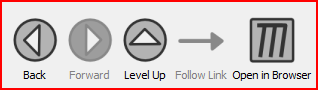

You can select items and navigate documents either by using toolbar buttons or by using keyboard shortcuts.
The relevant toolbar buttons for navigation are [Back], [Forward], [Level Up] and [Follow Link]

[Back] and [Forward] work in the same way as the back and forward buttons in web browsers.
The [Level Up] button will most of the time behave in the same way as the [Back] button. However, the back button will always display the previously 'visited' page, while the [Level Up] button will always display the 'mother' document of the currently viewed documents. The 'mother' document of a document is the document from which it was created using the Linnk! function.
The [Follow Link] button is only active if an item is selected, on which the Linnk action has been performed (so it is linked to another document).
== Keyboard Shortcuts ==
For navigating documents:
[Back]: Ctrl + Left Arrow
[Follow Link]: Ctrl + Right Arrow
TIP: You can also see the associated keyboard shortcuts for actions by browsing the Menu.
For selecting items:
Select the item below the currently selected item: Ctrl + Down Arrow
Select the item before the currently selected item: Ctrl + Up Arrow
(Remeber that while Ctrl + Arrows helps to switch between items, Alt + Arrows creates new items)